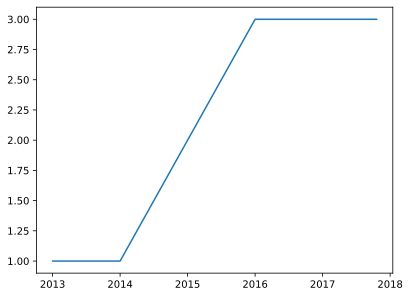
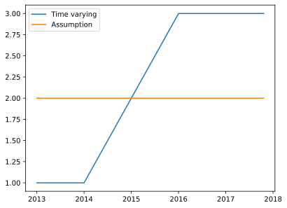
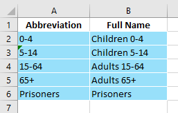
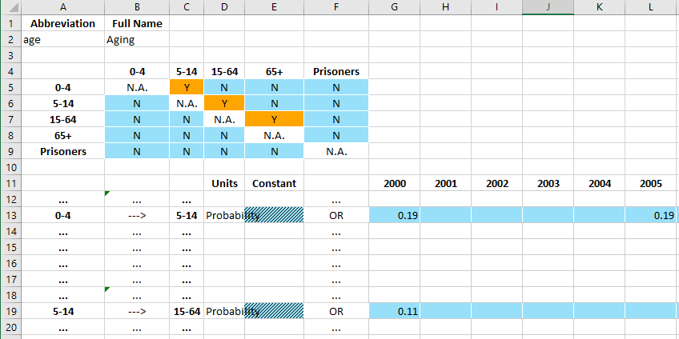
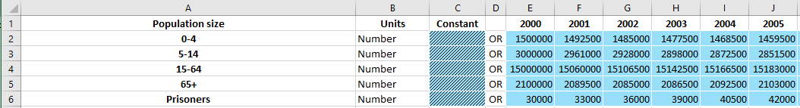

Data and Databooks¶
This page provides an overview of Atomica’s internal representation of databooks. Project data for an application is specified in a ‘databook’. This is an Excel file that contains
A listing of which populations a simulation will have
A specification of which transfers are present
Population and time specific values for characteristics, parameters, transfers, and interactions
ProjectData is a Python object containing the data, and it has methods to convert to and from the databook spreadsheet.
[1]:
import pandas as pd
import atomica as au
import matplotlib.pyplot as plt
import numpy as np
[2]:
F = au.ProjectFramework(au.LIBRARY_PATH / "tb_framework.xlsx")
data = au.ProjectData.from_spreadsheet(au.LIBRARY_PATH / "tb_databook.xlsx",F)
Parameter "lu_prog" is in rate units and a maximum value of "1" has been entered. Rates in the framework should generally not be limited to "1"
Parameter "lx_prog" is in rate units and a maximum value of "1" has been entered. Rates in the framework should generally not be limited to "1"
Parameter "leu_act" is in rate units and a maximum value of "1" has been entered. Rates in the framework should generally not be limited to "1"
Parameter "lex_act" is in rate units and a maximum value of "1" has been entered. Rates in the framework should generally not be limited to "1"
Parameter "llu_act" is in rate units and a maximum value of "1" has been entered. Rates in the framework should generally not be limited to "1"
Parameter "llx_act" is in rate units and a maximum value of "1" has been entered. Rates in the framework should generally not be limited to "1"
Parameter "l_inf" is in rate units and a maximum value of "1" has been entered. Rates in the framework should generally not be limited to "1"
Parameter "v_inf" is in rate units and a maximum value of "1" has been entered. Rates in the framework should generally not be limited to "1"
Parameter "lr_inf" is in rate units and a maximum value of "1" has been entered. Rates in the framework should generally not be limited to "1"
Parameter "ar_act" is in rate units and a maximum value of "1" has been entered. Rates in the framework should generally not be limited to "1"
Parameter "ar_rec" is in rate units and a maximum value of "1" has been entered. Rates in the framework should generally not be limited to "1"
Parameter "pd_rec" is in rate units and a maximum value of "1" has been entered. Rates in the framework should generally not be limited to "1"
Parameter "pm_rec" is in rate units and a maximum value of "1" has been entered. Rates in the framework should generally not be limited to "1"
Parameter "px_rec" is in rate units and a maximum value of "1" has been entered. Rates in the framework should generally not be limited to "1"
Parameter "nd_rec" is in rate units and a maximum value of "1" has been entered. Rates in the framework should generally not be limited to "1"
Parameter "nm_rec" is in rate units and a maximum value of "1" has been entered. Rates in the framework should generally not be limited to "1"
Parameter "nx_rec" is in rate units and a maximum value of "1" has been entered. Rates in the framework should generally not be limited to "1"
Parameter "pd_term" is in rate units and a maximum value of "1" has been entered. Rates in the framework should generally not be limited to "1"
Parameter "pm_term" is in rate units and a maximum value of "1" has been entered. Rates in the framework should generally not be limited to "1"
Parameter "px_term" is in rate units and a maximum value of "1" has been entered. Rates in the framework should generally not be limited to "1"
Parameter "nd_term" is in rate units and a maximum value of "1" has been entered. Rates in the framework should generally not be limited to "1"
Parameter "nm_term" is in rate units and a maximum value of "1" has been entered. Rates in the framework should generally not be limited to "1"
Parameter "nx_term" is in rate units and a maximum value of "1" has been entered. Rates in the framework should generally not be limited to "1"
The ProjectData object contains a number of attributes - pops is an odict storing populations and their full names. In the future, it may also store other attributes such as species - tvec stores the default time array associated with the data (users can override this on a per-table basis) - transfers and interactions store pairwise time series linking populations - tdve stores a dict of TimeDependentValueEntry tables for characteristics and parameters -
tdve_pages stores a dict assigning TDVE tables to worksheets
There are three basic elements to the databook
The population table
TimeDependentConnectiontables which are used for transfers and interactions. These have a ‘to’ and a ‘from’ populationTimeDependentValueEntrytables which are used for characteristics and parameters
TimeSeries objects¶
Time-varying data is backed by the TimeSeries object defined in structure.py. This object stores sparse time-varying data, together with an assumption. This allows it to keep track of both assumption and time-varying values entered in a databook. It has a few key properties
[3]:
ts = au.TimeSeries(t=[2014,2015],vals=[1,2])
A TimeSeries has t and vals attributes that store the time varying data
[4]:
ts.t
[4]:
[2014, 2015]
[5]:
ts.vals
[5]:
[1.0, 2.0]
The values can be modified using the insert and remove methods. These preserve the order of the times. Notice that the remove method removes data based on the time value rather than the index.
[6]:
ts.insert(2016,3)
ts.remove(2015)
ts.vals
[6]:
[1.0, 3.0]
A TimeSeries object also has an interpolate method to query its value at arbitrary times. It uses the same interpolation as for parameters, with constant extrapolation
[7]:
t = np.arange(2013,2018,0.2)
plt.plot(t,ts.interpolate(t))
[7]:
[<matplotlib.lines.Line2D at 0x7fe3c6e8d2d0>]

One of the special features of the TimeSeries object that caters for databook entry is the fact that it can independently store the constant assumption value. This is set by inserting a value with no time associated with it
[8]:
ts2 = au.TimeSeries()
ts2.insert(None,2)
ts2.assumption
[8]:
2.0
Since the data for a TimeSeries could be in assumption or in vals, the method get_arrays allows you to get time and value arrays for the content of the TimeSeries
[9]:
t,v = ts.get_arrays()
print(t)
print(v)
t,v = ts2.get_arrays()
print(t)
print(v)
[2014 2016]
[1. 3.]
[nan]
[2.]
However, the most common usage for the TimeSeries is to turn sparse data into full interpolated arrays. The interpolate method automatically manages the assumption and the time dependent values, so that you don’t have to do this yourself:
[10]:
t = np.arange(2013,2018,0.2)
plt.plot(t,ts.interpolate(t),label='Time varying')
plt.plot(t,ts2.interpolate(t),label='Assumption')
plt.legend()
[10]:
<matplotlib.legend.Legend at 0x7fe3c6ed4e50>

The TimeSeries object also has a units property that lets it store the units of the quantity entered in the databook.
In general, whenever the databook has a time-dependent values row with an assumption and some year-specific data, the corresponding object used to store the data on that row is a TimeSeries
Population table¶
The population table is very basic:

in the future, there will probably be more columns - for example, to separate human and mosquito populations (these would need to be validated against tags specified in the Framework)
TimeDependentConnections¶

A TimeDependentConnections table consists of three elements
A code name/full name table at the top
A matrix of Y/N values that controls which time series appear on the page
A set of time series inputs where the user enters time-varying data
This table is managed by the TimeDependentConnections object in excel.py which has
A code name
A full name
The type (whether it’s an interaction or a transfer - the difference being, a transfer cannot have any entries on the diagonal i.e. within the same population)
A list of population names
A list of times
A dict of
TimeSeriesobjects keyed by the(to,from)populaton namesA method
from_tables()to construct aTimeDependentConnectionsinstance based on the rows in the spreadsheetA method
write()that takes in a sheet and a start row, and writes the content for the object to the spreadsheet
TimeDependentValuesEntry¶

A TimeDependentValuesEntry consists of a single element with
The full name of the quantity at the top left
The left column with population names
Value entry cells for contant and year-specific values
A code name/full name table at the top A matrix of Y/N values that controls which time series appear on the page A set of time series inputs where the user enters time-varying data
This table is managed by the TimeDependentValuesEntry object in excel.py which has
A name
The time vector
A dict of
TimeSeriesobjects keyed by the population nameA method
from_rows()to construct aTimeDependentValuesEntryinstance based on the rows in the spreadsheetA method
write()that takes in a sheet and a start row, and writes the content for the object to the spreadsheet
ProjectData operations¶
A number of possible operations can be performed on ProjectData
Get a new instance using
ProjectData.new()where you pass in a Framework together with a list (or number) or populations and transfersUse
to_spreadsheet()to get a scirisSpreadsheetrepresentation of the data, andsave()to write theProjectDatato diskUse
get_ts()to get the time-data associated with a quantity out ofProjectDatae.g. when making parametersYou can add or remove populations and transfers while keeping data intact
You can change the time values using
change_tvec()while keeping the data intact
Note that you can also change the time values in the spreadsheet in place just by adding or removing columns. In principle, you can also specify values only for a subset of populations, but at the moment this is probably not propagated through the model yet.